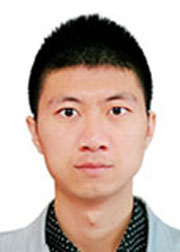

踏实笃行，奋斗的青春终无悔！
尊敬的各位领导、老师、亲爱的同学们：
大家好！我是化学学院2010级的张志超，曾任东北师范大学厚普公益学校四期校长。曾获长春市志愿服务先进个人、长春市优秀共青团员、吉林省十佳大学生提名奖。现已保送我校2+3研究生。今天我汇报的题目是《踏实笃行，奋斗的青春终无悔》。
今天我能够有幸站在这里和大家分享我的故事，首先要感谢母校给予我的培养，给了我一个成长成才的优良环境和平台。师大一直被誉为“人民教师的摇篮”，有着培养优秀教师的深厚底蕴和文化氛围，这里的一切让我我深深地喜欢上了教师这一职业，也更坚定了我立志从教的梦想。师大不仅给了我仰望星空的梦想，同时也给了我脚踏实地的实践平台——东北师范大学厚普公益学校。从入学的第一天开始我的生活就和厚普紧紧地联系在了一起，成长的每一步无不来自在厚普公益学校的历练与磨砺。所以，我的故事还要从厚普公益学校说起。
大家好！我是化学学院2010级的张志超，曾任东北师范大学厚普公益学校四期校长。曾获长春市志愿服务先进个人、长春市优秀共青团员、吉林省十佳大学生提名奖。现已保送我校2+3研究生。今天我汇报的题目是《踏实笃行，奋斗的青春终无悔》。
今天我能够有幸站在这里和大家分享我的故事，首先要感谢母校给予我的培养，给了我一个成长成才的优良环境和平台。师大一直被誉为“人民教师的摇篮”，有着培养优秀教师的深厚底蕴和文化氛围，这里的一切让我我深深地喜欢上了教师这一职业，也更坚定了我立志从教的梦想。师大不仅给了我仰望星空的梦想，同时也给了我脚踏实地的实践平台——东北师范大学厚普公益学校。从入学的第一天开始我的生活就和厚普紧紧地联系在了一起，成长的每一步无不来自在厚普公益学校的历练与磨砺。所以，我的故事还要从厚普公益学校说起。
厚普公益学校创办于2009年9月，是由东北师范大学首届免费师范生自发创办的一所面向农民工和贫困家庭子女的公益性辅导学校。“厚普”的名字取意于英文单词“hope”，寓意为希望。学校现有教学班级43个，在校学生629人（含教学基地），在职志愿教师213人，其中，博士1人，硕士23人，本科生188人。截至目前，共有来自长春市65所中小学的2773名农民工和贫困家庭子女在厚普公益学校进行过学习；先后有617名东北师范大学在校生作为志愿教师参与到厚普公益学校的教学管理工作中。五年来，厚普公益学校志愿教师的服务时数长达103680小时，创造社会价值约300余万元，厚普的志愿服务工作曾多次被中国青年报、新华日报、吉林省新闻联播等多家媒体报道。
可能大家都会惊羡于这些光鲜的数字，然而这些成绩背后蕴含的是无数东师学子默默的奉献与坚守。一批批同龄人用爱心与担当在厚普这个舞台上发光发热，书写自己的青春梦想。寒来暑往，一批又一批农民工、贫困家庭的孩子从厚普毕业，一批又一批东师学子在厚普这个青春的舞台上筑梦成长。而我有幸成为了其中的一员。
在厚普，从班主任到教务处主任，再到校长，从管理学生到服务教师，再到凝聚团队，从大一到大四，厚普的工作繁琐却又那么的充满活力。每个晨曦微亮的周末，在室友们还在睡梦中的时候，我早已起身到厚普教室静静地等候来上课的学生；每个灯光沉寂的夜晚，在别人沉寂在与恋人相守的浪漫之时，我还在俯首整理教务文件；周末、假期，本是一个可以激扬青春、放松心情的字眼，但对我来说饱饱睡上一觉都是非常奢侈。学校创办初期，社会、家长对厚普充满了质疑，招生工作遇到了极大的困难，为了招到学生，我打电话给各个中学进行宣传，被拒了一次就再打第二次，第三次······，为了了解贫困家庭孩子的求学信息，我顶着烈日、冒着严寒去走访社区、残联、妇联，奔波于慈善会。记得在一次招生过程中，当我跟家长说明来意后，家长用鄙夷的语气说道，你们一群涉世未深的大学生，能够做出什么成绩，只是拿我们的孩子当实验品罢了。脚下踩着厚厚的积雪，迎面吹来的是瑟瑟寒风，天已过正午，肚子饿的咕咕直叫，当时委屈的只想大哭一场，但我还是选择了用微笑和行动推销自己。
我深知想要赢得别人的信任，就必须要有过硬的本事。怀着这个信念，我积极推行厚普精品课堂的打造，作为厚普的校长，我没有坐在办公室的闲暇，更多的是走进教室查课，走进每一个教研组聆听问题，解决问题；为了提升厚普志愿教师的教学水平，我奔波于各个学院、各所中学，向学院教授、一线教师请教，为志愿教师搭建交流成长的平台；为了提高厚普的管理水平，我利用工作、学习的暇余时间，阅学校管理的方面的书籍，并将理论应用于厚普的教学管理。在和团队的共同努力下，厚普的教学管理模式逐步完善，教学质量不断提升，社会、学生家长的质疑不见了，多的是一份信任与支持。厚普的口碑越来越好，很多学生家长慕名而来。记得去年我去妇联走访，认识了一个叫姜涛的残疾儿童，他患有先天性白内障，双眼视力接近于零，但他非常的刻苦，钢琴过了九级，他的梦想是要当一名音乐家，但是先天的残疾让他的文化课学习异常吃力，来自农村的他和奶奶一起住在一个十几平米的出租房里，根本无法负担高昂的补习费用，更没有人愿意去教一个半盲人。和姜涛奶奶进行了沟通之后，我决定选聘厚普最好的老师来帮助这个孩子实现梦想。当时姜涛奶奶握着我的手朴实的说道：“孩子就交给你了，只要孩子能有个好的出路，我把家里的一切都可以捐给你们”，老人充满希冀与信任的眼神让我至今难以忘记。经过几番辗转，我联系到了音乐学院的博士生张晓敏学姐来辅导他声乐知识，并选聘了厚普各教研组的优秀志愿教师对于进行文化课辅导，姜涛很争气，他在刚刚结束的艺考中取得了优异成绩，考入了四平盲校，当姜涛奶奶在第一时间告诉我这个消息时，一种发自心底的幸福感油然而生，曾经的种种委屈又算了什么，被人信任固然是高兴的，但被人需要更何尝不是一种幸福。
有人说，选择了厚普，就是选择了忙碌，我认为忙碌的另一种说法应是充实。无论是学习还是工作，踏实笃行永远是前进路上不可或缺的品质，在一步步踏实的坚守与奋进中，我在厚普的志愿工作取得了良好的成绩，在团委老师的指导帮助下，我和团队伙伴在原有基础上创办了厚普高中部和社区分校，进一步扩大了厚普的志愿服务范围和规模。如今，厚普已然成为东师的明星学生组织，成为了吉林省志愿服务的新品牌，更成为了东师学子认领社会责任，铸就师魂师德、锤炼师能的实践平台。
回首四年的大学生活，成长路上有过迷茫，有过汗水，感谢母校的培养，感谢师长的教诲，更要感谢自己在青春年华里的踏实笃行，让我的青春无怨无悔！
可能大家都会惊羡于这些光鲜的数字，然而这些成绩背后蕴含的是无数东师学子默默的奉献与坚守。一批批同龄人用爱心与担当在厚普这个舞台上发光发热，书写自己的青春梦想。寒来暑往，一批又一批农民工、贫困家庭的孩子从厚普毕业，一批又一批东师学子在厚普这个青春的舞台上筑梦成长。而我有幸成为了其中的一员。
在厚普，从班主任到教务处主任，再到校长，从管理学生到服务教师，再到凝聚团队，从大一到大四，厚普的工作繁琐却又那么的充满活力。每个晨曦微亮的周末，在室友们还在睡梦中的时候，我早已起身到厚普教室静静地等候来上课的学生；每个灯光沉寂的夜晚，在别人沉寂在与恋人相守的浪漫之时，我还在俯首整理教务文件；周末、假期，本是一个可以激扬青春、放松心情的字眼，但对我来说饱饱睡上一觉都是非常奢侈。学校创办初期，社会、家长对厚普充满了质疑，招生工作遇到了极大的困难，为了招到学生，我打电话给各个中学进行宣传，被拒了一次就再打第二次，第三次······，为了了解贫困家庭孩子的求学信息，我顶着烈日、冒着严寒去走访社区、残联、妇联，奔波于慈善会。记得在一次招生过程中，当我跟家长说明来意后，家长用鄙夷的语气说道，你们一群涉世未深的大学生，能够做出什么成绩，只是拿我们的孩子当实验品罢了。脚下踩着厚厚的积雪，迎面吹来的是瑟瑟寒风，天已过正午，肚子饿的咕咕直叫，当时委屈的只想大哭一场，但我还是选择了用微笑和行动推销自己。
我深知想要赢得别人的信任，就必须要有过硬的本事。怀着这个信念，我积极推行厚普精品课堂的打造，作为厚普的校长，我没有坐在办公室的闲暇，更多的是走进教室查课，走进每一个教研组聆听问题，解决问题；为了提升厚普志愿教师的教学水平，我奔波于各个学院、各所中学，向学院教授、一线教师请教，为志愿教师搭建交流成长的平台；为了提高厚普的管理水平，我利用工作、学习的暇余时间，阅学校管理的方面的书籍，并将理论应用于厚普的教学管理。在和团队的共同努力下，厚普的教学管理模式逐步完善，教学质量不断提升，社会、学生家长的质疑不见了，多的是一份信任与支持。厚普的口碑越来越好，很多学生家长慕名而来。记得去年我去妇联走访，认识了一个叫姜涛的残疾儿童，他患有先天性白内障，双眼视力接近于零，但他非常的刻苦，钢琴过了九级，他的梦想是要当一名音乐家，但是先天的残疾让他的文化课学习异常吃力，来自农村的他和奶奶一起住在一个十几平米的出租房里，根本无法负担高昂的补习费用，更没有人愿意去教一个半盲人。和姜涛奶奶进行了沟通之后，我决定选聘厚普最好的老师来帮助这个孩子实现梦想。当时姜涛奶奶握着我的手朴实的说道：“孩子就交给你了，只要孩子能有个好的出路，我把家里的一切都可以捐给你们”，老人充满希冀与信任的眼神让我至今难以忘记。经过几番辗转，我联系到了音乐学院的博士生张晓敏学姐来辅导他声乐知识，并选聘了厚普各教研组的优秀志愿教师对于进行文化课辅导，姜涛很争气，他在刚刚结束的艺考中取得了优异成绩，考入了四平盲校，当姜涛奶奶在第一时间告诉我这个消息时，一种发自心底的幸福感油然而生，曾经的种种委屈又算了什么，被人信任固然是高兴的，但被人需要更何尝不是一种幸福。
有人说，选择了厚普，就是选择了忙碌，我认为忙碌的另一种说法应是充实。无论是学习还是工作，踏实笃行永远是前进路上不可或缺的品质，在一步步踏实的坚守与奋进中，我在厚普的志愿工作取得了良好的成绩，在团委老师的指导帮助下，我和团队伙伴在原有基础上创办了厚普高中部和社区分校，进一步扩大了厚普的志愿服务范围和规模。如今，厚普已然成为东师的明星学生组织，成为了吉林省志愿服务的新品牌，更成为了东师学子认领社会责任，铸就师魂师德、锤炼师能的实践平台。
回首四年的大学生活，成长路上有过迷茫，有过汗水，感谢母校的培养，感谢师长的教诲，更要感谢自己在青春年华里的踏实笃行，让我的青春无怨无悔！